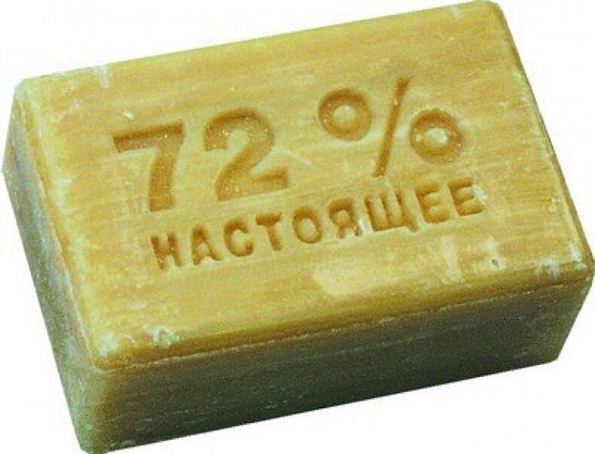
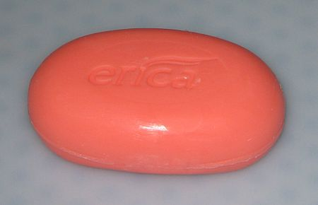

Мы́ло — твёрдый или жидкий продукт, содержащий поверхностно-активные вещества, в соединении с водой, используемый как косметическое средство — для очищения кожи и ухода за ней (туалетное мыло), либо как средство бытовой химии — в качестве моющего средства (хозяйственное мыло). Основными компонентами мыла являются растворимые соли предельных (насыщенных) жирных кислот, например стеарат натрия. Иногда в мыло добавляют различные масла и глицерин для придания определённой консистенции, цвета, густоты и качеств. Не следует путать с мыльными продуктами и синтетическими моющими средствами, которые изготавливаются на основе синтетических поверхностно-активных веществ, которые могут производиться из растительных жиров (лаурилсульфат натрия) или из продуктов химической переработки нефти — алкилбензосульфонат и т. п.
Мыло начали изготавливать ещё в древних цивилизациях, таких как Шумер и Вавилон (около 2800 года до н. э.). Описание технологии производства мыла было найдено в Месопотамии на глиняных табличках, относящихся примерно к 2200 году до н. э.[источник не указан 849 дней] Древние египтяне для гигиены использовали соду. Также папирус Эберса (1550 год до н. э.) упоминает некую мылоподобную субстанцию из животных (гусь) и растительных жиров с добавлением свинца (экстракт галенита) или карбоната натрия (извлекаемого из Нила)[1]. Широко применяли подобные моющие средства и в Древнем Риме, где впервые встречается упоминание мыла (лат. sapo, затем перешедшее во многие романские языки) у Плиния Старшего в «Естественной истории». В древнерусской литературе мыло упомянуто в Домострое (XVI век). Доказано, что масла биологического происхождения хорошо снимают загрязнения с поверхности кожи. Это легко заметить при употреблении жирной пищи руками, например, жареного на костре мяса. В то время как в южных широтах для мытья проще было использовать растительное масло, в северных это могло быть затруднительным ввиду дороговизны сырья. А топлёный животный жир получать в условиях севера ощутимо легче. Учитывая, что для топления зачастую использовали открытый огонь, смешение топлёного жира с золой или песком было вопросом времени. В дальнейшем необходимо было лишь подобрать оптимальный состав жиров для получения однородной смеси. В 1808 году французский химик Мишель Эжен Шеврёль (1786−1889) по просьбе владельцев текстильной фабрики установил состав мыла. В результате анализа оказалось, что мыло — это смесь натриевых солей высших жирных (карбоновых) кислот. В Европе и США непрерывный процесс мыловарения был отработан в конце 1930-х годов вместе с непрерывным процессом гидролиза (расщепления) жиров водой и паром высокого давления в мыловаренных башнях.
